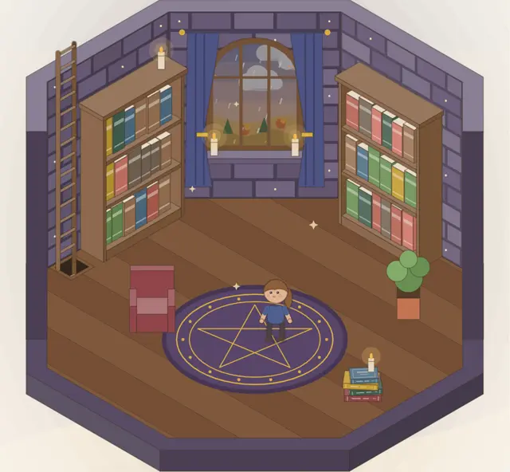
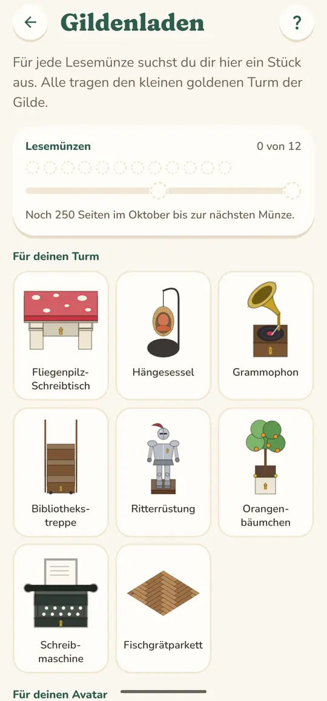
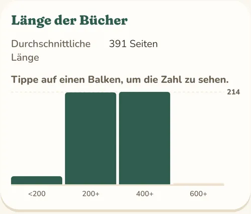
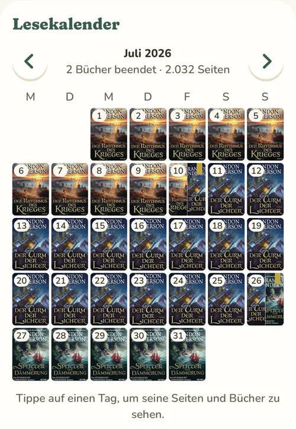

Mehr Karten im Jahresrückblick
Dein Lesejahr bekommt zwei Karten dazu: die Zitate, die du gesammelt hast, und wie sich dein Jahr angefühlt hat, von spannend bis gemütlich.
Bookspire Gilde
Als Mitglied der Gilde richtest du jede Etage deines Turms ein, tauschst deine Lesemünzen gegen besondere Stücke und erfährst in der Gildenstatistik, wie du eigentlich liest.
2,99 € im Monat oder 24,99 € im Jahr. Die ersten 14 Tage sind kostenlos.

Über dem Erdgeschoss schlafen die Etagen deines Turms, bis du sie als Mitglied der Gilde weckst. Dann bekommt jede ihr eigenes Gesicht: im ersten Stock vielleicht Sternenstein und ein roter Ohrensessel, darüber Moosstein und ein heller Birkenboden. So wird aus deinem Turm ein Haus mit vielen Zimmern.

Im Gildenladen tauschst du deine Lesemünzen gegen Stücke deiner Wahl, etwa eine Tasse Tee für deinen Avatar, ein Grammophon oder einen Hängesessel, in dem man mit einem Buch verschwinden kann. Kleines kostet eine Münze, die Prachtstücke drei, Sparen lohnt sich also. Jeden Monat kommen zwei neue dazu, keins verschwindet wieder, und was du eingetauscht hast, gehört dir für immer.
Die Münzen bekommst du für je 250 Seiten, die du in einem Monat erfasst, höchstens zwei im Monat. Kaufen kann man sie nicht.

Die Gildenstatistik verrät dir, wie viele Tage du für ein Buch brauchst, an welchen Wochentagen du am meisten liest, welches Genre du am besten bewertest und auf welcher Seite du ein Buch im Schnitt weglegst, wenn es dich nicht hält. Sie stellt dein Jahr neben das letzte und zeigt dir, wie sich deine Bücher angefühlt haben und welche Sätze du aus ihnen mitgenommen hast.
Dabei schaust du nicht nur auf ganze Jahre, sondern auf jeden Monat, jedes Quartal oder einen Zeitraum deiner Wahl, und filterst nach Genre, Format oder Tag.

Im Lesekalender trägt jeder Tag, an dem du gelesen hast, das Cover deines Buchs. Ein goldenes Lesebändchen markiert den Tag, an dem du es beendet hast. So siehst du auf einen Blick, wie lange dich ein Buch begleitet hat und wann das nächste übernahm.
Am Monatsende teilst du den Kalender als Bild, dazu einen Rückblick mit deinem Lieblingsbuch, deinen Lesetagen und dem Zitat des Monats.

Dein Lesejahr bekommt zwei Karten dazu: die Zitate, die du gesammelt hast, und wie sich dein Jahr angefühlt hat, von spannend bis gemütlich.
Gründe einen Club für deinen Lesekreis, lade alle per Link ein und stimmt gemeinsam ab, was ihr als Nächstes lest. Mitmachen können alle, auch ohne Gilde.
Am Dach deines Turms weht das weinrote Gildenbanner, zwei weitere hängen neben der Tür, und in deinem Profil steht deine Initiale auf Gold. Ob deine Freund*innen das sehen, entscheidest du.
Mittags erfasst du auf dem Handy, abends auf dem Tablet, und beide sind auf demselben Stand, denn als Mitglied werden all deine Geräte zugleich synchronisiert.
Endet deine Mitgliedschaft, ruhen die oberen Etagen so, wie du sie eingerichtet hast. Deine Gildenstücke bleiben dir.
Etagen, Freischaltungen und Lesemünzen gibt es für Bücher und Seiten, nie für Geld.
Es gibt keinen Countdown, keine Stücke auf Zeit und kein Angebot, das beim Öffnen der App aufspringt.
Bibliothek, Statistik und Export bleiben für alle frei. Deine Bücher nimmst du jederzeit mit.
In Deutschland 2,99 € im Monat oder 24,99 € im Jahr, inklusive Umsatzsteuer. Wer die Gilde zum ersten Mal abschließt, probiert sie 14 Tage lang kostenlos aus. In anderen Ländern zahlst du in deiner Währung; den genauen Preis zeigt dir der App Store oder Google Play.
In der App unter Profil → Bookspire Gilde. Dort wählst du das Monats- oder das Jahresabo, bezahlt wird über den App Store oder Google Play.
Sie sammeln sich trotzdem in deinem Beutel und warten dort. Trittst du später bei, tauschst du sie sofort ein.
Deine oberen Etagen ruhen so, wie du sie eingerichtet hast, und deine Gildenstücke bleiben dir. Die Gildenstatistik wird wieder zur Vorschau, synchronisiert wird ein Gerät, und Lesemünzen sammelst du weiter. Trittst du wieder bei, ist alles sofort zurück.
Jederzeit in den Abo-Einstellungen des App Store oder von Google Play. Die Mitgliedschaft läuft bis zum Ende des Zeitraums, den du schon bezahlt hast.
Für deinen Turm ja, jedes gelesene Buch füllt die Regale. Lesemünzen gibt es nur für Seiten, die du ab dem Start der Gilde in Bookspire erfasst.
Für die Gilde ja, damit deine Mitgliedschaft auf all deinen Geräten gilt. Bookspire selbst funktioniert auch ohne Konto.
Ja, an einem kleinen Zeichen neben deinem Namen und an „In der Gilde“, wenn sie deinen Turm besuchen. Ausschalten kannst du das im Profil unter „Konto & Privatsphäre“.
Lade Bookspire herunter, lies wie immer, und probier die Gilde 14 Tage lang kostenlos aus.